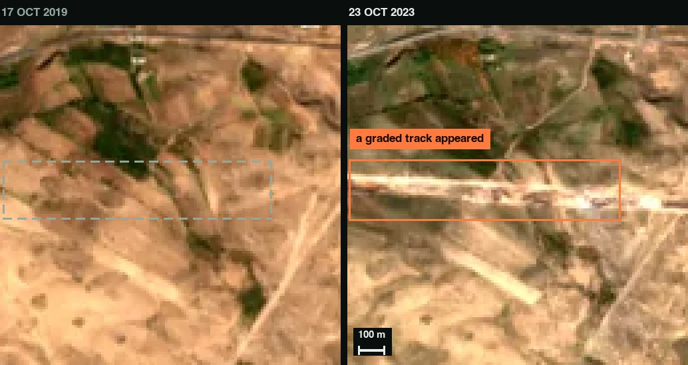

Space / geospatial AI · Armenia
Which land changes deserve a field visit?
GroundTruth is a prototype for connecting satellite-change candidates with human review and field evidence. We are starting with land clearing and earthworks in Armenia, where a model score still leaves an inspector with a decision to make.
Our 24-hour proposal: use Codex to build one complete path from a flagged image to a reviewed, exportable inspection case.
Existing work · brought to the event
Real imagery, an inspectable baseline, explicit errors.
Imagery annotations
57 drawn boxes, 16 accepted detector suggestions and 19 rejected suggestions. These are image judgments; field confirmation is still to come.
Baseline features
A Python logistic-regression detector uses spectral change, texture, neighborhood context and geographic priors.
Thresholds explored
The saved evaluation exposes both recovered changes and repeated false alarms. Inspect the actual counts below.

Inspect the saved baseline results and their limits
The archived Vanadzor report shows the trade-off between recovering selected changes and repeating known false alarms:
| Threshold | Drawn positive boxes hit | Rejected boxes hit |
|---|---|---|
| 0.5 | 51 / 56 | 13 / 19 |
| 0.7 | 42 / 56 | 9 / 19 |
| 0.9 | 22 / 56 | 6 / 19 |
The 57 drawn boxes include one uncertain example excluded from the positive denominator. These are saved exploratory spatial cross-validation results, not a new training run, operational precision, or an independent-region benchmark. Box matching does not establish semantic-class accuracy. The archived report’s feature labels use 2018/2021/2025; its scene provenance and split boundaries need reconciliation before a fresh evaluation.
Download the aggregate evidence and source hashes. Full training inputs are not included here, so this page does not claim to reproduce the detector.
New work · proposed for the sprint
One case, from candidate to evidence.
- Triage: review source images and dates; reject, mark uncertain, or request a field check.
- Verify: collect a phone photo and its reported time and location, preserving the original file and reviewer decision.
- Export: produce a case record that keeps observations, interpretation and missing evidence distinct.
Codex will support the case schema, persistence, upload validation, evidence export and end-to-end checks. We will disclose the existing detector and keep the event’s new contribution identifiable, subject to organizer rules.
If no legitimate field observation is available, the case stays “verification pending.” Autonomous drone stations, legal determinations and hazard prediction are outside this sprint.
What we want to prove
A useful inspection decision, with evidence.
We want to test whether an Armenian surveying or inspection operator can select useful site visits from reviewed change candidates. We will report true, false and uncertain results on a fixed evaluation set, plus whether a case can be completed and exported with its evidence intact.
Firebird’s space focus and engineering mentors make this a useful place to challenge our evaluation, reduce false alarms and build the verification workflow. Our longer-term direction is dependable satellite-to-field monitoring; the immediate deliverable is one traceable case.